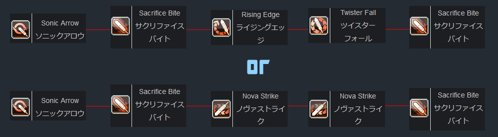

Game Updates
- New Endless Quest (March 6): Endless: Eternal Rondo
- KOF Legends AC Scratch
- Buster Quest reworks
Helpful Resources
My Other Sites
Contact
Email me if you have any questions or comments:
thatstraveling@gmail.comIntroduction to Hunter
What is Hunter?
Hunter is the closest thing in the game to a Tank class. It's skill tree allows for a lot of survivability. This is a good class to start out the game with because of this. Moreover, the class is the go-to subclass for a lot of other builds, so it is good to level this one first not only to make it easier to start out in the game, but because it will be used with nearly every other class.
How do you play Hunter?
Hunters can equip Partizans, Wired Lances, and Swords. My preference is to focus on Sword. I encourage you to experiment with the other weapons, but for this guide I will be focusing on Sword, as I have more experience with it. Partizans don't have a lot of use within my playstyle, however, Lances do have a definite advantage. They have more range and more mobility, making them arguably better for mobbing. But Swords damage seems to be higher in any case, so that is what I stick with.
Hu/Fi with a sword is very reliant on TAJA combos (See Skill Tree Section) and keeping an eye on two things: Sword gear and Sacrifice Bite. The PA called 'Sonic Arrow' essentially is an instant full sword gear. This is the PA you will lead with in a fight. After that you need to use your crafted Sacrifice Bite PA to buff your sword. This PA also grants you PP. It's best to weave this PA in periodically to keep both your PP and your sword buff active. Guilty Break is another PA you will want to use for mobility. I've made a flowchart of the basic rotation for Hunter sword play:
I've already explained Sonic Arrow and Sacrifice Bite, so let me explain the rest. The top rotation is your single target damage. Rising Edge and Twister Fall are great for bossing or tough mobs. So once you get your Gear and Bite up, alternate between these two and Bite to get the most out of TAJA.
The bottom rotation is your mobbing damage. Nova strike with maxed Gear and Bite has good range and damage. Unfortuneately, there's not a lot of other alternatives for mobbing PAs on sword to TAJA combo with. So just weave in Bites and Guilty Break to close in any gaps. If there is an opening you could use a Rising Edge as well. I don't recommending winding up a Twister Fall in most mobbing situations, because you may get stun locked.
That's about all you need to know about Hu/Fi, good luck out there!
Skill Tree
There is really only one option for a Hunter subclass: Fighter. Since Hunter is usually the subclass of choice for striking based classes, Fighter is the next best thing in the category.
Here is a basic Hu/Fi Tree. The build is pretty simple, just making hits hit harder and getting some survivability. The only thing to pay attention to is called "Tech Arts JA Bonus". This has gotten the acronym "TAJA" in the community. This allows for a greater attack bonus when you Just Attack with a different PA than that of the previous. This is something to always consider when your trying to deal as much damage as you can.